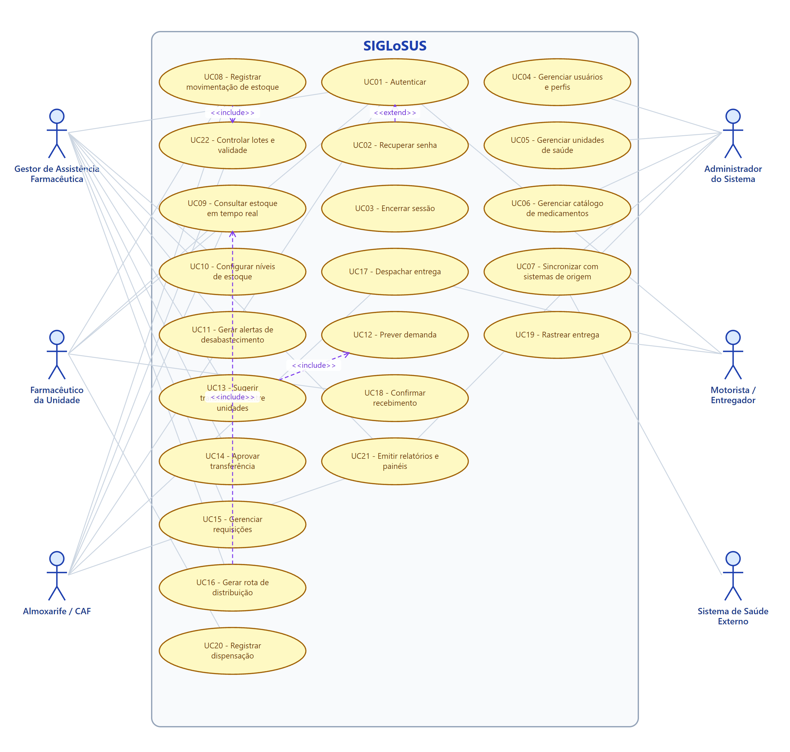

"Logística que salva vidas."
Instituição: Universidade Federal do Amazonas – UFAM / Instituto de Ciências Exatas e Tecnologia – ICET Disciplina: Engenharia de Software Documento: Especificação de Requisitos e Modelagem UML (Parte 1)
O SIGLoSUS é um sistema de informação voltado à gestão logística e à distribuição de medicamentos no âmbito do Sistema Único de Saúde (SUS). Ele nasce de um problema concreto e recorrente na rede pública: a falta de medicamentos nas farmácias (desabastecimento), causada, entre outros fatores, pela ausência de visão consolidada do estoque entre as unidades, por processos manuais e descentralizados, pela dificuldade de prever a demanda e por rotas de distribuição ineficientes.
O sistema não substitui as ferramentas já utilizadas pela gestão de saúde — ele integra-se a elas (por exemplo, e-SUS APS, HÓRUS/SNA e BNAFAR) para consolidar dados de estoque e dispensação em uma única visão em tempo real. A partir dessa visão, o SIGLoSUS passa a agir de forma proativa:
O objetivo final não é apenas ter uma gestão de estoque eficiente: é garantir que o medicamento esteja disponível quando e onde o paciente precisa, reduzindo a falta de remédios nas farmácias e, com isso, salvando vidas.
Escopo do sistema (o que está contemplado):
Fora do escopo (o que NÃO está contemplado nesta versão):
Os usuários do SIGLoSUS são classificados conforme o perfil de atuação na cadeia de assistência farmacêutica. Cada perfil possui responsabilidades e níveis de acesso distintos.
| Perfil (Ator) | Descrição | Principais responsabilidades no sistema |
|---|---|---|
| Gestor de Assistência Farmacêutica | Profissional responsável pela gestão da assistência farmacêutica na região de saúde. | Acompanha painéis, aprova transferências e requisições, configura parâmetros de estoque, analisa previsões e relatórios. |
| Farmacêutico da Unidade | Farmacêutico responsável pelo estoque e pela dispensação em uma unidade de saúde (UBS/hospital). | Consulta o estoque da unidade, registra movimentações e dispensações, confirma recebimentos e sinaliza necessidades. |
| Almoxarife / Responsável pela CAF | Profissional que opera a Central de Abastecimento Farmacêutico. | Registra entradas e saídas, atende requisições, prepara e despacha entregas, controla lotes e validade. |
| Motorista / Entregador | Profissional que realiza a distribuição física dos medicamentos. | Visualiza a rota, confirma a saída, registra a entrega e reporta ocorrências; opera em modo offline. |
| Administrador do Sistema | Profissional de TI responsável pela manutenção técnica e pela configuração do sistema. | Gerencia usuários e perfis, configura integrações, monitora sincronizações e a auditoria. |
| Sistema de Saúde Externo (ator secundário) | Sistemas já utilizados pela rede (e-SUS APS, HÓRUS/SNA, BNAFAR). | Fornecem e recebem dados de estoque e dispensação por meio de integração/API. |
Convenções de escrita (conforme material de referência):
- Requisitos Funcionais (RF) e Requisitos Não-Funcionais (RNF) são escritos no infinitivo, iniciando por "O sistema deve…".
- Regras de Negócio (RN) descrevem políticas/condições da organização, não iniciam com "O sistema deve…" e não citam as palavras sistema, software ou aplicativo.
- Prioridades: Essencial (sem ele o sistema não funciona), Importante (funciona, mas de forma insatisfatória) e Desejável (pode ficar para versões futuras).
| Identificador | Descrição | Escopo | Prioridade |
|---|---|---|---|
| RF01 | O sistema deve permitir o acesso do usuário por meio de login e senha. | Geral | Essencial |
| RF02 | O sistema deve permitir que o usuário recupere a senha esquecida. | Geral | Importante |
| RF03 | O sistema deve permitir a saída do usuário (logout). | Geral | Importante |
| RF04 | O sistema deve permitir o cadastro, a edição e a inativação de usuários, atribuindo-lhes perfis de acesso. | Administração | Essencial |
| RF05 | O sistema deve permitir o cadastro e a manutenção das unidades de saúde (UBS, hospitais e centros de distribuição). | Cadastros | Essencial |
| RF06 | O sistema deve permitir o cadastro e a manutenção do catálogo de medicamentos (nome, princípio ativo, apresentação, código CATMAT e indicação de controlado). | Cadastros | Essencial |
| RF07 | O sistema deve integrar-se, por meio de API, aos sistemas de saúde já utilizados (e-SUS APS, HÓRUS/SNA e BNAFAR) para importar e exportar dados de estoque e de dispensação. | Integração | Essencial |
| RF08 | O sistema deve registrar todas as movimentações de estoque (entradas, saídas, transferências e ajustes), vinculando o lote e o usuário responsável. | Estoque | Essencial |
| RF09 | O sistema deve consolidar e apresentar, em tempo real, a posição de estoque de cada medicamento em cada unidade. | Estoque | Essencial |
| RF10 | O sistema deve permitir a configuração dos níveis mínimo e de segurança de estoque por medicamento e por unidade. | Estoque | Essencial |
| RF11 | O sistema deve gerar alertas automáticos de risco de desabastecimento quando o estoque atingir o nível mínimo configurado. | Monitoramento | Essencial |
| RF12 | O sistema deve prever a demanda de cada medicamento por unidade e por período, com base no histórico de consumo. | Inteligência | Importante |
| RF13 | O sistema deve sugerir transferências de medicamentos entre unidades com excedente e unidades com déficit. | Distribuição | Essencial |
| RF14 | O sistema deve permitir que o gestor aprove ou rejeite as transferências sugeridas. | Distribuição | Essencial |
| RF15 | O sistema deve gerar rotas de distribuição otimizadas, considerando a distância, a prioridade das unidades e a capacidade do veículo. | Distribuição | Essencial |
| RF16 | O sistema deve permitir o despacho e o acompanhamento das entregas em tempo real. | Distribuição | Importante |
| RF17 | O sistema deve permitir a confirmação de recebimento da entrega pela unidade de destino. | Distribuição | Essencial |
| RF18 | O sistema deve controlar lotes e datas de validade, aplicando a regra de saída por validade. | Estoque | Essencial |
| RF19 | O sistema deve permitir o registro da dispensação de medicamentos ao paciente. | Assistência | Importante |
| RF20 | O sistema deve gerenciar as requisições de medicamentos enviadas pelas unidades ao centro de distribuição. | Distribuição | Essencial |
| RF21 | O sistema deve emitir relatórios e painéis gerenciais (dashboards) de estoque, consumo, desabastecimento e entregas. | Gestão | Importante |
| RF22 | O sistema deve registrar logs de auditoria de todas as operações críticas realizadas pelos usuários. | Segurança | Essencial |
| Identificador | Descrição | Categoria | Escopo | Prioridade |
|---|---|---|---|---|
| RNF01 | O sistema deve criptografar as senhas dos usuários e os dados sensíveis, tanto em trânsito (TLS) quanto em repouso. | Segurança | Geral | Essencial |
| RNF02 | O sistema deve tratar os dados pessoais em conformidade com a Lei Geral de Proteção de Dados (LGPD). | Segurança / Conformidade | Geral | Essencial |
| RNF03 | O sistema deve responder às consultas de estoque em tempo real em até 2 segundos. | Desempenho | Estoque | Essencial |
| RNF04 | O sistema deve calcular e apresentar uma rota otimizada em até 60 segundos. | Desempenho | Distribuição | Importante |
| RNF05 | O sistema deve estar disponível 99,5% do tempo, de forma contínua (24 horas por dia, 7 dias por semana). | Disponibilidade | Geral | Essencial |
| RNF06 | O sistema deve apresentar interface responsiva, de fácil uso e acessível, atendendo ao nível AA das diretrizes WCAG 2.1. | Usabilidade / Acessibilidade | Geral | Importante |
| RNF07 | O sistema deve disponibilizar interfaces de programação (APIs REST) e adotar o padrão HL7 FHIR para interoperabilidade com os sistemas de saúde. | Interoperabilidade | Integração | Essencial |
| RNF08 | O sistema deve suportar, no mínimo, 500 unidades de saúde e 5.000 usuários simultâneos sem degradação. | Escalabilidade | Geral | Importante |
| RNF09 | O sistema deve garantir a integridade das operações de estoque por meio de transações consistentes (tudo ou nada). | Confiabilidade | Estoque | Essencial |
| RNF10 | O sistema deve manter os registros de auditoria por, no mínimo, 5 anos. | Auditabilidade | Segurança | Importante |
| RNF11 | O sistema deve funcionar nos principais navegadores modernos e em dispositivos móveis. | Portabilidade | Geral | Importante |
| RNF12 | O sistema deve ser construído de forma modular e documentada, com testes automatizados que garantam sua manutenibilidade. | Manutenibilidade | Geral | Importante |
| RNF13 | O aplicativo do motorista deve operar em modo offline e sincronizar automaticamente quando houver conexão. | Disponibilidade | Distribuição | Importante |
| Identificador | Descrição | Escopo | Prioridade |
|---|---|---|---|
| RN01 | Um medicamento só pode ser transferido de uma unidade que possua estoque acima do seu nível de segurança. | Estoque | Essencial |
| RN02 | A distribuição e a dispensação de medicamentos devem seguir a regra FEFO (First Expired, First Out): o primeiro que expira é o primeiro que sai. | Estoque | Essencial |
| RN03 | Medicamentos com validade inferior a 90 dias não podem ser transferidos entre unidades. | Estoque | Importante |
| RN04 | Unidades com estoque abaixo do nível mínimo têm prioridade no recebimento de entregas. | Distribuição | Essencial |
| RN05 | Medicamentos sujeitos a controle especial (Portaria SVS/MS nº 344/98) exigem rastreabilidade por lote e conferência por dois responsáveis. | Assistência | Essencial |
| RN06 | O abastecimento deve priorizar os medicamentos da RENAME (componente básico da assistência farmacêutica). | Distribuição | Importante |
| RN07 | As rotas de entrega devem respeitar a capacidade de carga do veículo e a jornada de trabalho do motorista. | Distribuição | Essencial |
| RN08 | Transferências entre unidades devem priorizar as unidades mais próximas, a fim de reduzir custo e tempo de entrega. | Distribuição | Importante |
| RN09 | Requisições acima do limite de valor definido pela gestão exigem aprovação do gestor de assistência farmacêutica. | Gestão | Importante |
O diagrama abaixo apresenta os atores, os casos de uso do SIGLoSUS e os relacionamentos de <<include>> (obrigatório) e <<extend>> (opcional). Todos os casos de uso estão associados a pelo menos um requisito funcional e mantêm linha de interação com o ator.
Legenda:
<<include>>: um caso de uso dispara obrigatoriamente outro (dependência);<<extend>>: um caso de uso opcional ocorre dentro do contexto de outro.
Figura 1 – Diagrama de Casos de Uso do SIGLoSUS.
Observação sobre as dependências (
<<include>>):
- UC13 (Sugerir transferência) depende de UC12 (Prever demanda) — só é possível sugerir a redistribuição conhecendo a demanda futura.
- UC16 (Gerar rota) depende de UC09 (Consultar estoque em tempo real) — a rota é montada a partir da posição consolidada de estoque.
- UC08 (Registrar movimentação) depende de UC22 (Controlar lotes e validade) — toda movimentação respeita a regra FEFO.
| Campo | Descrição |
|---|---|
| Nome do caso de uso | UC01 – Autenticar |
| Caso de uso geral | Fluxo Principal |
| Ator principal | Usuário (qualquer perfil) |
| Atores secundários | N/A |
| Resumo | Descreve as etapas de acesso do usuário ao sistema por meio de login e senha. |
| Pré-condições | O usuário deve possuir cadastro ativo e acesso à internet. |
| Pós-condições | Sendo os dados válidos, o usuário é redirecionado ao painel inicial conforme o seu perfil. |
| Ações do Ator | Ações do Sistema |
|---|---|
| 1 – Informar e-mail (ou CPF) e senha | |
| 2 – Validar as credenciais informadas | |
| 3 – Verificar o perfil de acesso do usuário | |
| 4 – Confirmar o acesso | |
| 5 – Registrar o acesso no log de auditoria e liberar a aplicação |
| Restrições/Validações |
|---|
| Se as credenciais forem inválidas, o acesso não é concedido. |
| O acesso é bloqueado temporariamente após 5 tentativas incorretas. |
Tabela 1 – Especificação do caso de uso Autenticar.
| Campo | Descrição |
|---|---|
| Nome do caso de uso | UC07 – Sincronizar com sistemas de origem |
| Caso de uso geral | Fluxo Principal |
| Ator principal | Administrador do Sistema |
| Atores secundários | Sistema de Saúde Externo (e-SUS APS, HÓRUS/SNA, BNAFAR) |
| Resumo | Descreve a integração do SIGLoSUS com os sistemas já utilizados pela rede para importar/exportar dados de estoque e dispensação. |
| Pré-condições | As integrações devem estar configuradas e os serviços externos disponíveis. |
| Pós-condições | Os dados de estoque e dispensação são consolidados e ficam disponíveis para consulta em tempo real. |
| Ações do Ator | Ações do Sistema |
|---|---|
| 1 – Solicitar a sincronização (manual ou agendada) | |
| 2 – Consultar os sistemas externos via API | |
| 3 – Receber os dados de estoque e dispensação | |
| 4 – Validar e conciliar os dados recebidos | |
| 5 – Atualizar a base consolidada de estoque | |
| 6 – Registrar o resultado e possíveis divergências da sincronização |
| Restrições/Validações |
|---|
| Se um sistema externo estiver indisponível, a última sincronização válida é mantida e o erro é registrado. |
| Dados divergentes são sinalizados para conferência manual. |
Tabela 2 – Especificação do caso de uso Sincronizar com sistemas de origem.
| Campo | Descrição |
|---|---|
| Nome do caso de uso | UC09 – Consultar estoque em tempo real |
| Caso de uso geral | Fluxo Principal |
| Ator principal | Farmacêutico / Almoxarife / Gestor |
| Atores secundários | N/A |
| Resumo | Descreve a consulta consolidada da posição de estoque por medicamento e por unidade. |
| Pré-condições | O usuário deve estar autenticado e possuir dados de estoque sincronizados. |
| Pós-condições | O sistema apresenta a posição de estoque atualizada e os respectivos alertas. |
| Ações do Ator | Ações do Sistema |
|---|---|
| 1 – Selecionar filtros (medicamento, unidade, período) | |
| 2 – Recuperar os dados consolidados de estoque | |
| 3 – Calcular a situação em relação aos níveis mínimo e de segurança | |
| 4 – Apresentar a posição de estoque e os alertas associados |
| Restrições/Validações |
|---|
| A consulta deve refletir a última sincronização realizada. |
| Medicamentos abaixo do nível mínimo são destacados visualmente. |
Tabela 3 – Especificação do caso de uso Consultar estoque em tempo real.
| Campo | Descrição |
|---|---|
| Nome do caso de uso | UC13 – Sugerir transferência entre unidades |
| Caso de uso geral | Fluxo Principal |
| Ator principal | Gestor de Assistência Farmacêutica |
| Atores secundários | N/A |
| Resumo | Descreve a geração automática de sugestões de redistribuição de medicamentos entre unidades com excedente e unidades com déficit. |
| Pré-condições | O estoque deve estar sincronizado e a previsão de demanda deve ter sido calculada (UC12). |
| Pós-condições | As sugestões de transferência ficam disponíveis para aprovação. |
| Ações do Ator | Ações do Sistema |
|---|---|
| 1 – Acessar o painel de redistribuição | |
| 2 – Identificar unidades com excedente e unidades com déficit | |
| 3 – Verificar as regras de negócio (nível de segurança, FEFO, validade, proximidade) | |
| 4 – Calcular e apresentar as sugestões de transferência | |
| 5 – Selecionar a sugestão desejada | |
| 6 – Encaminhar a sugestão para aprovação (UC14) |
| Restrições/Validações |
|---|
| Não pode ser sugerida transferência de unidade com estoque abaixo do nível de segurança (RN01). |
| Medicamentos com validade inferior a 90 dias não podem ser transferidos (RN03). |
Tabela 4 – Especificação do caso de uso Sugerir transferência entre unidades.
| Campo | Descrição |
|---|---|
| Nome do caso de uso | UC14 – Aprovar transferência |
| Caso de uso geral | Fluxo Principal |
| Ator principal | Gestor de Assistência Farmacêutica |
| Atores secundários | N/A |
| Resumo | Descreve a análise e a aprovação (ou rejeição) de uma transferência sugerida. |
| Pré-condições | Deve existir ao menos uma sugestão de transferência pendente. |
| Pós-condições | Aprovada, a transferência é registrada e passa a compor as entregas a serem roteirizadas. |
| Ações do Ator | Ações do Sistema |
|---|---|
| 1 – Analisar a sugestão de transferência | |
| 2 – Aprovar ou rejeitar a sugestão | |
| 3 – Validar as regras de negócio aplicáveis | |
| 4 – Registrar a decisão e atualizar a situação da transferência | |
| 5 – Notificar as unidades envolvidas |
| Restrições/Validações |
|---|
| A aprovação exige a conferência das regras de negócio (RN01, RN03, RN08). |
| Uma transferência rejeitada retorna ao painel com a justificativa. |
Tabela 5 – Especificação do caso de uso Aprovar transferência.
| Campo | Descrição |
|---|---|
| Nome do caso de uso | UC16 – Gerar rota de distribuição |
| Caso de uso geral | Fluxo Principal |
| Ator principal | Gestor de Assistência Farmacêutica |
| Atores secundários | Almoxarife / CAF |
| Resumo | Descreve a geração de uma rota otimizada para a distribuição dos medicamentos até as unidades de destino. |
| Pré-condições | Deve haver transferências aprovadas ou requisições a entregar; veículo e motorista devem estar definidos. |
| Pós-condições | A rota é gerada, sequenciando as paradas, e fica disponível para despacho. |
| Ações do Ator | Ações do Sistema |
|---|---|
| 1 – Selecionar as unidades de destino e o veículo | |
| 2 – Recuperar a posição de estoque e as prioridades (UC09) | |
| 3 – Calcular a melhor sequência de paradas (distância, prioridade, capacidade) | |
| 4 – Apresentar a rota com distância e tempo estimados | |
| 5 – Confirmar a rota | |
| 6 – Disponibilizar a rota para o despacho (UC17) |
| Restrições/Validações |
|---|
| A rota deve respeitar a capacidade de carga do veículo e a jornada do motorista (RN07). |
| Unidades com estoque abaixo do mínimo têm prioridade (RN04). |
Tabela 6 – Especificação do caso de uso Gerar rota de distribuição.
| Campo | Descrição |
|---|---|
| Nome do caso de uso | UC18 – Confirmar recebimento |
| Caso de uso geral | Fluxo Principal |
| Ator principal | Farmacêutico da Unidade |
| Atores secundários | Motorista / Entregador |
| Resumo | Descreve a conferência e a confirmação de que os medicamentos entregues foram recebidos pela unidade de destino. |
| Pré-condições | Deve existir uma entrega despachada para a unidade. |
| Pós-condições | O recebimento é registrado, o estoque da unidade é atualizado e a entrega é finalizada. |
| Ações do Ator | Ações do Sistema |
|---|---|
| 1 – Conferir os itens e os lotes entregues | |
| 2 – Apresentar os itens previstos na entrega | |
| 3 – Confirmar o recebimento (ou registrar divergência) | |
| 4 – Atualizar o estoque da unidade de destino | |
| 5 – Encerrar a entrega e atualizar a situação da rota |
| Restrições/Validações |
|---|
| Havendo divergência de itens ou lotes, o recebimento é registrado com pendência e o gestor é notificado. |
Tabela 7 – Especificação do caso de uso Confirmar recebimento.
Os diagramas de sequência detalham a interação entre os atores e os objetos do sistema nos casos de uso principais, seguindo o padrão boundary → control → entity.
Figura 2 – Sequência Autenticar.
Figura 3 – Sequência Sincronizar com sistemas de origem.
Figura 4 – Sequência Sugerir e Aprovar Transferência.
Figura 5 – Sequência Gerar rota de distribuição.
Figura 6 – Atividade Monitoramento e reposição de estoque.
Figura 7 – Atividade Geração de rota de distribuição.
Figura 8 – Atividade Autenticação.
O diagrama de classes abaixo representa a estrutura estática do SIGLoSUS, com suas principais entidades, atributos, métodos e relacionamentos.
Figura 9 – Diagrama de Classes do SIGLoSUS.
Fim da Parte 1 — Documento de Especificação de Requisitos e Modelagem UML do SIGLoSUS.